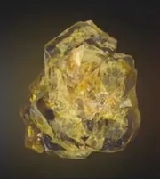

| Name |
Color |
Info |
Img |
| пространство |
синий |
Он способен предоставить доступ к любой точке во вселенной |
 |
| разум |
желтый |
Камень может подавлять умы других, подчиняя их воле владельца, а также способен проецировать сознание пользователя на высший уровень существования. Также было сказано, что камень сильно увеличивает интеллект того, кто его носит, как в случае с Локи и Вольфгангом фон Штрукером. Когда кампания Локи провалилась, скипетр попал во владение Щ.И.Т.а и со временем перешёл к ГИДРЕ с помощью тайных агентов. Скипетр после этого был использован в различных экспериментах ГИДРЫ, и были раскрыты другие возможности, такие как: контроль разума, энергетическая и астральная проекция |
 |
| реальность |
красный |
В отличии от всех, ранее встреченных камней бесконечности, у которых содержащие ячейки - твёрдые, эфир выглядит как тёмная, красная и вязкая жидкость |
 |
| сила |
пурпурный |
Камень является источником невероятной силы, который, при использовании всего потенциала, содержит достаточно мощи, чтобы уничтожить целую планету |
 |
| души |
оранжевый |
камень души может оказаться самой большой угрозой из всех камней бесконечности |
 |
| время |
зеленый |
Когда он используется пользователем, обладающим достаточными знаниями и навыками, он, похоже, может контролировать течение времени, в малой или большой степени, обращать что-то в предыдущее состояние, ускорять время, чтобы произошли изменения, которые на самом деле ещё не произошли, или запереть во временной петле, перезапуская первоначальное состояние предмета, пока пользователь не остановит данный эффект |
 |